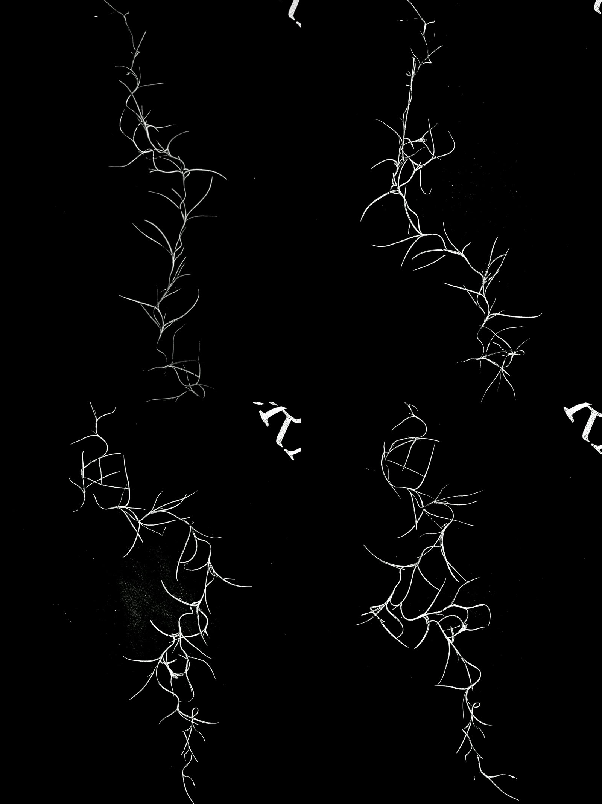

TWINEM × Ibiza Boat Rave
A six-loop Y2K VJ pack for twin DJ duo TWINEM's Seaport boat rave in Boston, scoped, built, and delivered in a 96-hour sprint, in their exact brand colors, with zero AI in the visuals.
Who is TWINEM?

TWINEM (@twinemmusic) is Liv and Emma, a twin-sister DJ duo on the East Coast playing house, bass, and EDM with high-energy, high-femme rave sets. Both queer, both loud about making space for female and twin talent on lineups.
The twin thing isn't a gimmick, it's the brand: matched but distinct. Mirrors, duplicates, symmetry. Their world is Y2K nightlife, neon pink and teal on black, chrome, cherries, and a panther's worth of attitude. The job was to turn that world into moving pictures for their headline boat rave.
An IG story, forwarded twice in ten minutes.
TWINEM posted a story: "Do you make dj visuals? Do you want money? Please let us know if so (or if you know anyone who does)." Two different friends forwarded it within minutes of each other. The network is the lead engine.
The first DM led with the differentiator: "I make DJ visuals without AI!" Their reply, instantly: "Love that you don't use AI for it." Within the hour they had a call on the books and the studio's branding questionnaire in their hands.
The questionnaire found their brand before the call did.
They filled the branding questionnaire that evening, and the intake pipeline auto-onboarded them within a minute: a full client file with their brand words (energy, friendly, bold, inclusive, electric), their aesthetic (Y2K, nightlife, rave, polished but playful), their colors, and their own deadline. They said the form itself impressed them: "it made us ask ourselves questions we hadn't."
On the call the next evening the scope locked to six visuals, brainstormed together: some ideas made the cut, some were killed in the room. Face-forward shots were dropped because they weren't comfortable on a big screen, and heavy Y2K distortion became the compromise everyone loved (more on that below). The project was confirmed on the call itself, deadline set: files to the venue before Saturday's 5 PM soundcheck.
Blocker number one, flagged before a single pixel: what screen is on that boat? Solved the same night through the boat's crew: these cruises run a standard 4K TV. Target locked, 3840×2160, 16:9.
The creative got built in a group chat, same night.
Emma opened the group chat 55 minutes after the call ended, and that thread became a remote film set. The twins and a patient friend were the camera crew; the studio directed every shot from the other end of the phone. Which lens (the .5 ultrawide). Phone sideways. Propped on the railing, on anything, a soda can, for stability. Then a voice memo walking them through moving the camera all the way to the ground for the low angle, leaned against the porch lattice. Flash on. And the framing dialed in take by take: Emma sends a clip and asks "Up more?", the studio calls back "in between that and the height of the previous video", she reshoots once more, and the verdict comes back: "chefs kiss perfect height." Two minutes, three takes, locked.
One rule before anything: send a test frame before real takes. That single move meant a night of phone footage came back usable, and nobody reshot anything.
Instead of describing the silhouette look, a YouTube reference did the talking. Liv: "Omg yes! That's exactly what I was trying to find when we were in the call!" Every brand asset landed within hours: the wordmark in three colorways, existing chrome logo renders, poster art, merch designs with source files. No true vector existed, so their PNG got traced into real SVGs by hand rather than waiting. And the colors were confirmed from the source files, not eyeballed: pink #E4175E, teal #3AC0C3, build to assets, not words.
Progress updates went out through the night, exactly as promised on the call: the first 3D chrome logo look at 10:21 PM, a strobe effect discovered by accident on the silhouettes at 11:27 PM, the last update at 2:06 AM. Their reaction at 12:33 AM: "Noooo omg all of these are SO awesome!!! Exactly what we're looking for this is amazing."
Six loops, one sprint, zero AI.
Six loops, each seamless 4K in their exact brand colors, each built by hand: the 3D chrome logo in scripted wobble motion, walking twin silhouettes under the 2D logo, the DVD-bounce cherries with the CRT treatment, the dithered headphones loop, the twin telekinesis shot, and the logo tile wall. They play around 128 BPM, and the loop lengths were built with that in mind.
The details are where it got fun. The chrome logo doesn't just sit in a generic studio reflection: its environment is a custom pink-and-teal liquid-swirl world built from their own merch colors, so the chrome shifts between their two brand hues as it turns. The reflection IS the branding.
The night-porch footage from that directed shoot was too dark to isolate the boots, so an overexposed duplicate of the clip became the masking reference, driving a clean automask on the original. No reshoot needed. And the "twin" in the silhouette visual is one walking twin, duplicated in post with a time offset between the copies, the twin concept executed in the edit. Her boots are picked out in brand pink inside the white body; the scanlines got pushed harder at the twins' request, dialed in over three same-day versions until Emma's verdict: "PERFECT!"
A pattern ran through the whole build: every big call came with options. Plain cherries or TV-line cherries. Two dither looks. Outline or no-outline chrome. They picked, every time, fast.


The lightning is Spanish moss from a morning walk.
The telekinesis shot needed lightning arcing between the mirrored twins. The obvious move was buying a stock lightning pack. Instead, on a morning walk, Mitch photographed Spanish moss hanging from a tree: eight iPhone shots, isolated to white-on-black, converted into a numbered frame sequence and used as a luma matte. Eight frames cycling at 30fps lands around a quarter of a second, which reads as a natural electric flicker.
It works because of real geometry: the moss's branching strands and lightning share the same fractal structure. Nature already drew the effect; it just needed to be pointed at.
That made it the third build-don't-buy move on one job: traced their vectors by hand when no SVG existed, built a custom dither tool instead of licensing a plugin, and shot a plant instead of buying a lightning pack.

A custom tool, built mid-sprint.
The headphones loop needed authentic Y2K pixelation, and plugin presets kept looking like a filter instead of an era. So the sprint paused for an hour to build a small custom dithering tool, tuned to TWINEM's palette, and the loop got processed through that instead. The tool now lives in the studio kit, branded to them.
Their face-shyness became the aesthetic.
On the call, Liv wasn't comfortable with her face blown up on a venue screen, and both twins worried about hair and makeup for footage they'd be shooting on a phone at night. The lazy fixes were to drop those shots, or to reshoot properly another day, which the clock made impossible. The real fix came from their own brand: they had asked for Y2K, so the direction pushed hard INTO pixelation and dithering, which made them unidentifiable AND more on-brand than a clean shot would ever have been.
The constraint produced a better result than its absence would have. Same logic solved the night-footage problem: silhouettes don't care that it's dark. The limitation set the direction, twice.
Files named, shared folder stood up, everything labeled.
The pack was complete Saturday morning, hours before soundcheck: every loop delivered in multiple encodes, normalized to a consistent frame rate, every file named so a stranger could tell which was which. Everything went into a shared folder with the twins and their crew, and the full project stays archived on the studio side, so the next show starts from a running start, not from zero.
Everything shipped pre-keyed, with alpha versions included, a studio standard: the person loading files at soundcheck is often not a visuals pro, so the pack is built for them, not for an ideal operator. The whole pack was also encoded to DXV3 as insurance, the native format if it ever runs through real VJ software.
And the plot twist that reshaped the delivery: the job's longest-running open question, "what format does the VJ want?", got answered late in the week when Liv asked the venue directly: "I asked for visuals person and they said there isn't one lol." There was no VJ. Plain hit-play files became the priority, and a lesson got logged: chase an unknown to a person who can actually answer it, early.
One more handoff lesson got baked into studio process permanently: delivery is not "files uploaded," it is "recipient confirmed inside." Access requests are a silent failure mode, so every future handoff opens the folder first and gets an explicit "I'm in" the same hour.

The show threw a curveball. The work outlived it.
Show night brought the twist nobody scoped: there ended up being no one on the boat who could actually run the visuals. The sound engineer gave it a shot, it didn't come together, and the pack sat out the set it was built for.
And here's the thing: nothing was wasted. These were never one-night decorations. Six seamless loops in TWINEM's exact colors are their visual identity now, every gig from here, every clip they post, every time someone asks what TWINEM looks like, it's already made and it's theirs. The twins' own words, after the show: "You are a magician. You did such awesome work in such a short time period."
The lesson rides along for next time: for any VJ pack, "who physically runs it, on what machine, and have they opened the files" is now a scoping question as blocking as screen dimensions.
What shipped, and what's next.
Shipped
Twelve pieces off a six-loop brief: the six core loops in TWINEM's official colors, two bonus dancing loops nobody asked for, a third logo-wall variant, and a stainless-steel spinning logo made purely as a thank-you. Every clip in three formats (mp4, alpha MOV, DXV3), plus true vector tracings of their wordmark and cherries (they had none) and a static logo kit. One share link covers everything. First contact to pack-complete in 96 hours.
Locked for the next show
An operator plan settled ahead of time: who runs the visuals, on what machine, files opened and tested, with a pre-rendered hit-play fallback so a sound engineer can run the whole set with one button. The 3D logo has more moves in it, and the pack is built to grow, every project file is archived and ready to pick back up.
Built fast, built together.
Who did what
Tool chain
↓
Scoped call + interactive call sheet (specs first, brand read-back)
↓
Vector tracing (their PNG → true SVG wordmark + cherries)
↓
3D software (chrome logo, scripted figure-8 motion)
↓
Custom dither tool (TWINEM-tuned Y2K pixelation)
↓
Spanish moss, photographed (the lightning, 8-frame luma matte)
↓
4K seamless loop renders (multiple encodes, consistent frame rate)
↓
Shared-folder delivery (named, labeled, confirmed)
First contact Monday evening → pack complete Saturday 9:42 AM. August 4-8, 2026. Lead to delivered identity in four days.